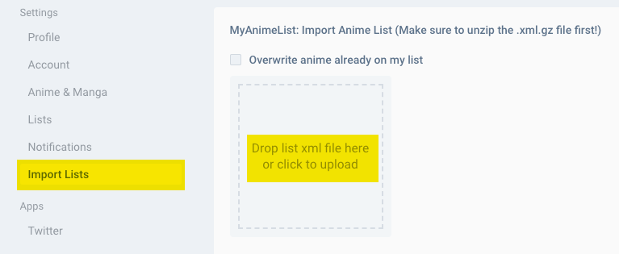

This tool converts your Proxer Anime List into a XML File, which can be imported to Anilist
Let's Get Started
Make your Proxer Account public
Select "Settings" and tick "all" for the first 4 entries
Click on "Save"
Find out your Proxer User ID
Select the "Profile" tab again
Copy the ID from the URL
Export the Anime List
Import Anime List to Anilist
Click on "Import Lists" and drop the XML file into the box
It's done :)